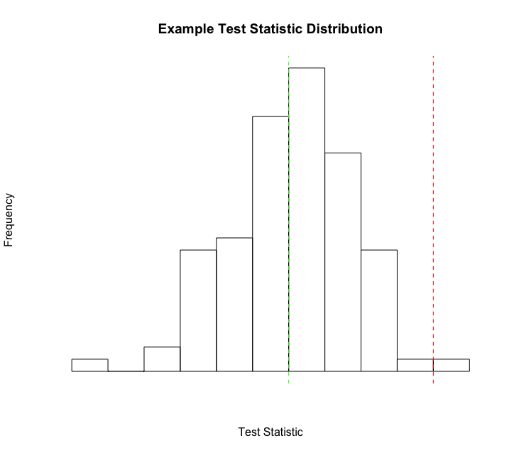
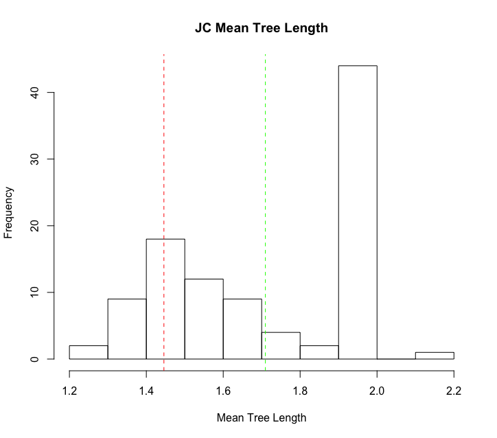

Overview
This tutorial presents the general principles of assessing the reliability of a phylogenetic inference through the use of posterior predictive simulation (PPS). PPS works by assessing the fit of an evolutionary model to a given dataset, and analyzing several test statistics using a traditional goodness-of-fit framework to help explain where a model may be the most inadequate.
Preparation
This tutorial expects you have compelted the prerequisite tutorials listed above. It will also expect you to be reasonably familiar with phylogenetic analyses, command line usage and if you want to explore your results, having at least a basic understanding of R. If you run this tutorial all the way through with the single full_analysis_JC.Rev script it takes approximately 20 - 25 minutes depending on your computer. If you work through every line-by-line to get a better understanding it takes approximately 60 minutes.
Introduction
Assessing the fit of an evolutionary model to the data is critical as using a model with poor fit can lead to spurious conclusions. However, a critical evaluation of absolute model fit is rare in evolutionary studies. Posterior prediction is a Bayesian approach to assess the fit of a model to a given dataset (Bollback 2002) (Brown 2014) (Gelman et al. 2014), that relies on the use of the posterior and the posterior predictive distributions. The posterior distribution is the standard output from Bayeisan phylogenetic inference. The posterior predictive distribution represents a range of possible outcomes given the assumptions of the model. The most common method to generate these possible outcomes, is to sample parameters from the posterior distribution, and use them to simulate new replicate datasets (Fig. 1). If these simulated datasets differ from the empirical dataset in a meaningful way, the model is failing to capture some salient feature of the evolutionary process.
The framework to construct posterior predictive distributions, and
compare them to the posterior distribution is conveniently built in to
RevBayes through the $P^{3}$ pipeline (Höhna et al. 2017). In this tutorial we will walk you through using this
functionality to perform a complete posterior predictive simulation on
an example dataset.
If you would like more information than we provide here, we would highly encourage you to read the $P^{3}$ manuscript for a deeper discussion of the full feature set.
Data-Based Versus Inference-Based Comparisons
Most statistics proposed for testing model plausibility compare
data-based characteristics of the original data set to the posterior
predictive data sets (e.g., variation in GC-content across species). In
data-based assessments of model fit one compares the empirical data to
data simulated from samples of the posterior distribution. RevBayes
additionally implements test statistics that compare the inferences
resulting from different data sets (e.g., the distribution of posterior
probability across topologies). These are called inference-based
assessments of model fit and will be the focus of this tutorial. For these assessments one must run an MCMC
analysis on each simulated data set, and then compare the inferences
made from the simulated data to the inference made from the empirical
data.

Due to time constraints, in today’s tutorial we will only cover the inference-based method of assessing model plausibility. The data-based method can be a powerful tool that you may want to explore at another time by visiting that tutorial.
Substitution Models
The models we use here are equivalent to the models described in the previous exercise on substitution models (continuous time Markov models). To specify the model please consult the previous exercise. Specifically, you will need to specify the following substitution models:
-
Jukes-Cantor (JC) substitution model (Jukes and Cantor 1969)
-
General-Time-Reversible (GTR) substitution model (Tavaré 1986)
Assessing Model Fit with Posterior Prediction
For your info
The entire process of posterior prediction can be executed by using the full_analysis_JC.Rev script in the scripts folder. If you were to type the following command into
RevBayes:source("scripts/data_pp_analysis_JC.Rev")the entire data-based posterior prediction process would run on the example dataset. However, in this tutorial, we will walk through each step of this process on an example dataset. As we follow along, you will want to execute the commands in the light blue boxes with black text only. The light blue boxes with grey text will show output from the commands, the grey boxes with white background will highlight pieces of scripts that are helpful, but don’t need to be executed.
Empirical MCMC Analysis
To begin, we first need to generate a posterior distribution from which to sample for simulation. This is the normal, and often only, step conducted in phylogenetic studies. Here we will specify our dataset, evolutionary model, and run a traditional MCMC analysis.
This code is all in the full_analysis_JC.Rev file.
Set up the workspace
First, let’s read in our dataset.
## EMPIRICAL MCMC
inFile = "data/primates_cytb.nex"
data <- readDiscreteCharacterData(inFile)
Successfully read one character matrix from file data/primates_and_galeopterus_cytb.nex
Great, we have our data in RevBayes now. Next, we’ll set up some workspace variables we will need. We can begin by specifying a
general name to apply to your analysis. This will be used for future
output files, so make sure it’s something clear and easy to understand.
analysis_name = "pps_example"
model_name = "JC"
model_file_name = "scripts/"+model_name+"_Model.Rev"
Specify the model
Now we’ll need to specify our model Jukes-Cantor in this case. We can do this by sourcing the name we gave our model script a few lines ago.
source( model_file_name )
Processing file "scripts/JC_Model.Rev"
Processing of file "scripts/JC_Model.Rev" completed
Now we have our data and our model for our empirical analyses read into RevBayes.
This command will process the JC_Model.Rev script in full.
If you want to tweak any of the model parameters, or just want a reminder about how model scripts in RevBayes work,
you can dig a little deeper in the aside box below or revist the Substitution Models.
JC Model Details
Taking a brief look at some of the details of the JC_Model.Rev script.
A few specific lines we can look at that might be interest, as we are using a unrooted tree for this analysis are:
#### specify the Jukes-Cantor substitution model applied uniformly to all sites ### Q := fnJC(4)Here we are specifying that we should use the Jukes-Cantor model, and have it applied uniformly to all sites in the dataset. While this obviously is not likely to be a good fitting model for most datasets, we are using it for simplicity of illustrating the process.
#### Specify a uniform prior on the tree topology ####This sets a uniform prior on the tree topology.
# We use here the exponential distribution with rate 1.0 as the branch length prior br_lens[i] ~ dnExponential(10.0)This sets an exponential distribution as the branch length prior.
# Build the tree by combining the topology with the branch length. phylogeny := treeAssembly(topology, br_lens)This builds the tree by combining the topology with branch length support values.
Run the MCMC
Now let’s run MCMC on our empirical dataset, just like a normal phylogenetic analysis. We need to set some variables:
First, we need to setup a counter for our monitors:
## set a monitor counter
mni = 0
Next, we need to setup the monitors themselves:
## setup our monitors
monitors[++mni] = mnModel(filename="output_" + model_name + "/" + analysis_name + "_posterior.log",printgen=100, separator = TAB)
monitors[++mni] = mnFile(filename="output_" + model_name + "/" + analysis_name + "_posterior.trees",printgen=100, separator = TAB, phylogeny)
monitors[++mni] = mnScreen(printgen=100, TL)
monitors[++mni] = mnStochasticVariable(filename="output_" + model_name + "/" + analysis_name + "_posterior.var",printgen=100)
Next, we need to setup the MCMC object:
mymcmc = mcmc(mymodel, monitors, moves, nruns=2)
mymcmc.burnin(generations=2000,tuningInterval=10)
Running burn-in phase of Monte Carlo sampler for 2000 iterations.
This simulation runs 2 independent replicates.
The simulator uses 23 different moves in a random move schedule with 23 moves per iteration
Progress:
0---------------25---------------50---------------75--------------100
********************************************************************
Finally, we can start the MCMC run:
## start the run
mymcmc.run(generations=10000)
Running MCMC simulation
This simulation runs 2 independent replicates.
The simulator uses 45 different moves in a random move schedule with 45 moves per iteration
Iter | Posterior | Likelihood | Prior | TL | elapsed | ETA |
-----------------------------------------------------------------------------------------------------------------------
0 | -16086.3 | -16099.8 | 13.4989 | 3.139019 | 00:00:00 | --:--:-- |
100 | -16088.8 | -16101.1 | 12.3286 | 3.256052 | 00:00:01 | --:--:-- |
.
.
.
-----------------------------------------------------------------------------------------------------------------------
10000 | -16085.4 | -16099.3 | 13.8874 | 3.10017 | 00:01:12 | 00:00:00 |
Here we are only using a small number of generations for the tutorial, however with empirical data you will most likely need a much larger number of generations to get a well mixed sample. The number of generations and printed generations is important to consider here for a variety of reasons, in particular for posterior predictive simulation. When we simulate datasets in the next step, we can only simulate 1 dataset per sample in our posterior. So, while the number of posterior samples will almost always be larger than the number of datasets we will want to simulate, it’s something to keep in mind.
MCMC output
After the process completes, the results can be found in the output_JC folder. You should see a number of familiar looking files, all with the name we provided under the analysis_name variable, pps_example in this case. Since we set the number of runs (nruns=2) in our MCMC, there will be two files of each type (.log .trees .var) with an _N where N is the run number. You will also see 3 files without any number in their name. These are the combined files of the output. These will be the files we use for the rest of the process. If you open up one of the combined .var file, you should see that there are 200 samples. This was produced by our number of generations (10000) divided by our number of printed generations, (100) what we specified earlier, combined from the two independent runs. This is important to note, as we will need to thin these samples appropriately in the next step to get the proper number of simulated datasets.
Posterior Predictive Data Simulation
The next step of posterior predictive simulation is to simulate new
datasets by drawing samples and parameters from the posterior
distribution generated from the empirical MCMC anlaysis. This functionality is
built into the backend of RevBayes in order to simplify the process.
In the full_analysis_JC.Rev script, that is conducted using the following line of RevScript:
> source("scripts/PosteriorPredictive_Simulation.Rev")
However, we will process each line of this script so that you can better understand what functions are being called.
First, we read in the trace file of the Posterior Distribution of Variables.
## Reading Trace
trace = readStochasticVariableTrace("output_" + model_name + "/" + analysis_name + "_posterior.var", delimiter=TAB)
Now we call the posteriorPredictiveSimulation() function, which accepts any valid model of sequence evolution, and output directory, and a trace. For each line in the trace, it will simulate a new dataset under the specified model.
## Creating Posterior Predictive Simulation
pps = posteriorPredictiveSimulation(mymodel, directory="output_" + model_name + "/" + analysis_name + "_post_sims", trace)
Now we run the posterior predictive simulation, generating a new dataset for each line in the trace file that was read in. This is the part where we need to decide how many simulated datasets we want to generate. If we just use the pps.run() command, one dataset will be generated for each sample in our posterior distribution. In this case, since we are reading in the combined posterior trace file with 200 samples, it would generate 200 simulated datasets. If you want to generate fewer, say 100 datasets, you need to use the thinning argument as above. In this case, we are thinning the output by 2, that is we are dividing our number of samples by 2. So that in our example case, we will end up simulating 100 new datasets.
## Running the posterior predictive simulation, here we are thinning the datasets by half
pps.run(thinning=2)
This process should finish in just a minute or two. If you look in the output_JC folder, there should be another folder called pps_example_post_sims. This folder is where the simulated datasets are saved. If you open it up, you should see 100 folders named posterior_predictive_sim_N. Where N is the number of the simulated dataset. In each of these folders, you should find a seq.nex file. If you open one of those files, you’ll see it’s just a basic NEXUS file. These will be the datasets we analyze in the next step.
Posterior Predictive MCMC Analysis
The next step of posterior predictive simulation is to conduct a full MCMC analysis on each of the new simulated datasets. This is by far, the most computationally intensive part of this process, as you are conducting 100 individual MCMC analyses. In a later section, we outline how this can be parallelized and sped up dramatically on HPC clusters or servers. However, for now, we will run this locally in serial mode with a low number of generations as an example.
In the full_analysis_JC.Rev script, that is conducted using the following line of RevScript:
source("scripts/PosteriorPredictive_MCMC.Rev")
However, we will process each line of this script so that you can better understand what functions are being called.
First, we need to specify a counter for our monitors:
## first we set a counter for our monitors
mni = 0
Next, we need to specify a couple of monitors for our MCMC moves:
## next we setup our monitors, like in our previous MCMC analyses
monitors[++mni] = mnModel(filename="output_" + model_name + "/" + analysis_name + "_posterior.log",printgen=100, separator = TAB)
monitors[++mni] = mnFile(filename="output_" + model_name + "/" + analysis_name + "_posterior.trees",printgen=100, separator = TAB, phylogeny)
Now we can setup our individual MCMC objects:
## now we setup our MCMC object for each posterior predictive dataset
mymcmc = mcmc(mymodel, monitors, moves, nruns=1)
Next, specify a directory for our output files:
## specify and output directory for each analysis
directory = "output_" + model_name + "/" + analysis_name + "_post_sims"
This step is a little different from previous MCMC setups. Here we are create a new pps_mcmc object for all of our individual analyses:
## specify a new pps_mcmc object for all of the independent analyses
my_pps_mcmc = posteriorPredictiveAnalysis(mymcmc, directory)
Finally, we run the 100 individual MCMC analyses:
## run the actual analyses
my_pps_mcmc.run(generations=10000)
Running posterior predictive analysis ...
Sim 1 / 100
Iter | Posterior | Likelihood | Prior | TL | elapsed | ETA |
-----------------------------------------------------------------------------------------------------------------------
0 | -9345.75 | -9353.53 | 7.77435 | 2.322464 | 00:00:00 | --:--:-- |
100 | 9.04115e+271 | 0 | 9.04115e+271 | 2.322464 | 00:00:00 | --:--:-- |
Now that we have a full set of MCMC analyses for our simulated data, we can move on to calculating test statistics.
Calculating the Test Statistics
Now we will calculate the test statistics from the empirical data and
the simulated data sets. Let’s go ahead and calculate our test statistics by entering the following lines into RevBayes.
num_post_sims = listFiles(path="output_"+model_name+"/" + analysis_name + "_post_sims").size()
source("scripts/PosteriorPredictive_TreeSummary.Rev")
Progress:
0---------------25---------------50---------------75--------------100
********************************************************************
Processing file "output_JC/posterior_predictive_sim_1/pps_example_posterior.trees"
.
.
.
Processing file "output_JC/pps_example_posterior.trees"
Progress:
0---------------25---------------50---------------75--------------100
********************************************************************
These are the same lines used in the full_analysis_JC.Rev script.
We will take a closer look at these lines but for a more complete discussion of the statistics involved, please review (Brown 2014) (Doyle et al. 2015). In general, this script and these statistics work by calculating the statistics of interest across each posterior distribution from the simulated datasets, and comparing those values to the values from the empirical posterior distribution.
The current version of this script generates several summary statistics including:
-
Various quantiles
-
Mean RF
-
Mean tree length
-
Tree length variance
-
Entropy

Since these values are calculated by iterating over the entire series of posterior predictive analyses they are a bit unweildy to run line by line. However, we will talk about some of the individual functions and how they work so if you wish you can develop your own test statistics at a later time. Here are some examples of these functions from the PosteriorPredictive_TreeSummary.Rev script:
This functions calculates pairwise RF distances between all trees in a tree trace.
rf_dists <- sim_tree_trace.computePairwiseRFDistances(credibleTreeSetSize=1.0,verbose=FALSE)
This function collects the tree lengths of all trees in a tree trace, these values are used for the tree length and variance statistics.
tree_length <- sim_tree_trace.computeTreeLengths()
This function calculates the entropy statistic for all trees in a given tree trace. Entropy is analogous to the uncertainty associated with sampling from the prior or posterior. As the data provide more information and the posterior probabilities of various topologies become increasingly uneven, entropy decreases causing the difference between the entropy of the prior and the posterior to increase. Equation $\ref{equation1}$.
entropy <- sim_tree_trace.computeEntropy(credibleTreeSetSize=1.0,numTaxa=data.ntaxa(),verbose=FALSE)
Assuming a uniform prior on topologies, the change in entropy can be calculated as:
These same statistics are calculated for both the posterior distributions from the simulated datasets and the posterior distribution from the empirical dataset. This framework is designed to be flexible, so if in the future you can imagine a test statistic you think would be informative for your model,
it is easy to expand these calculations in RevScript.
Calculating P-values and effect sizes
Once we have the test statistics calculated for the simulated and empirical posterior distributions, we can compare the simulated to the empirical to get a goodness-of-fit. One simple way to do this is to calculate a posterior predictive P-value for each of the test statistics of interest. This is done in the full_analysis_JC.Rev with the following lines :
First, we set our input file names.
emp_pps_file = "results_" + model_name + "/empirical_inference_" + analysis_name + ".csv"
sim_pps_file = "results_" + model_name + "/simulated_inference_" + analysis_name + ".csv"
Next, we set our output file name.
outfileName = "results_" + model_name + "/inference_pvalues_effectsizes_" + analysis_name + ".csv"
Now, let’s create a vector to hold the results for faster calculations:
statID = v("", "mean_rf", "quantile25", "quantile50", "quantile75", "quantile99", "quantile999", "mean_tl", "var_tl", "entropy")
We will talk about the individual calculations shortly, but for now, let’s go ahead and calculate all of our P-values for our test statistics.
Finally, we source the PosteriorPredictive_PValues.Rev script to run the calculations.
source("scripts/PosteriorPredictive_PValues.Rev")
Processing file "scripts/PosteriorPredictive_PValues.Rev"
Processing of file "scripts/PosteriorPredictive_PValues.Rev" completed
This script will calculate 3 posterior predictive P-values:
-
Lower 1-tailed (Equation $\ref{equation2}$)
-
Upper 1-tailed (Equation $\ref{equation3}$)
-
2-tailed (Equation $\ref{equation4}$)
The posterior predictive P-value for a lower one-tailed test is the proportion of samples in the distribution where the value is less than or equal to the observed value, calculated as:
The posterior predictive P-value for an upper one-tailed test is the proportion of samples in the distribution where the value is greater than or equal to the observed value, calculated as:
and the two-tailed posterior predictive P-value is simply twice the minimum of the corresponding one-tailed tests calculated as:
Let’s take a look at the PosteriorPredictive_PValues.Rev script to get a better idea of what is happening.
Calculates and returns a vector of lower, equal, and upper P-values for a given test statistic as outlined above in equation X.
p_values <- posteriorPredictiveProbability(numbers, empValue)
Calculates the midpoint P-value as outlined above in equation X.
midpoint_p_value = lower_p_value + 0.5*equal_p_value
Calculates the two-tailed P-value as outlined above in equation X.
two_tail_p_value = 2 * (min(v(lower_p_value, upper_p_value)))
Another way that you can calculate the magnitude of the discrepancy between the empirical and PP datasets is by calculating the effect size of each test statistic. Effect sizes are useful in quantifying the magnitude of the difference between the empirical value and the distribution of posterior predictive values. The test statistic effect size can be calculated by taking the absolute value of the difference between the median posterior predictive value and the empirical value, and dividing it by the standard deviation of the posterior predictive distribution (Doyle et al. 2015). Effect sizes are calculated automatically for the inference based test statistics in the $P^{3}$ analysis. The effect sizes for each test statistics are stored in the same output file as the P-values.
The line:
effect_size = abs((m - empValue) / stdev(numbers))
calculates the effect size of a given test statistic.
Now that we have all of these values calculated, we can visualize them in any number of ways.
Visualizing the Results
Visualizing the Results with R
All of the output from these analyses are saved to simple CSV text files. You can visualize your distributions and the fit of the empirical values to the distribution of simulated values in anyway that is intuitive for you.

Let’s walk through visualizing one of the test statistic datasets in a very basic R script so you can get a feel for one way it could be done.
Our data from this analyses is all stored in the results_JC/ folder. So it would be helpful to set your R workspace to that folder.
setwd("/YOUR/PATH/HERE/results_JC")
Once that’s done, the first thing we’ll want to do is to read in our empirical values.
empirical_inference_pps_example <- read.csv("/results_JC/empirical_inference_pps_example.csv", header=TRUE)
Next, we’ll read in the simulated values.
simulated_inference_pps_example <- read.csv("/results_JC/simulated_inference_pps_example.csv", header=TRUE)
Once we have our two datasets imported into R, we can easily create a plot like the example plot above. For this example, we’ll plot the
mean tree length (mean_tl) value from these analyses.
First, let’s create our histogram plot.
hist(simulated_inference_pps_example$mean_tl, breaks=20)
Next, let’s add a line showing the median just for a reference.
abline(v=median(simulated_inference_pps_example$mean_tl), col="green", lty=2)
Finally, let’s plot our empirical value to get a feel for how it compares to our simulated values.
abline(v=empirical_inference_pps_example$mean_tl, col="red", lty=2)

Additional Individual Exercises
Included in the scripts folder is a second model script called GTR_Model.Rev. As a personal exercise and a good test case, take some time now, and run the same analysis, substituting the GTR_Model.Rev model script for the JC_Model.Rev script we used in the earlier example. In order to speed this process up, you can duplicate the full_analysis_JC.Rev and name the new copy full_analysis_GTR.Rev. You can then just edit the lines in that one script to point to the GTR_Model.Rev script, and re-run your with a single command:
source("scripts/full_analysis_GTR.Rev")
You should get different results, this is an excellent chance to explore the results and think about what they suggest about the fit of the specified model to the dataset.
Test of GTR Model Adequacy
Some Questions to Keep in Mind:
-
Do you find the goodness-of-fit results to suggest that the GTR or JC model is a better fit for our data?
-
Which test statistics seem to show the strongest effect from the use of a poorly fitting model?
-
Other than P-values, what other ways might you explore the test statistic distributions to identify poor fit?
For your consideration
In this tutorial you have learned how to use
RevBayesto assess the fit of a substitution model to a given sequence alignment. As you have discovered, the observed data should be plausible under the posterior predictive simulation if the model is reasonable. In phylogenetic analyses we choose a model, which explicitly assumes that it provides an reasonable explanation of the evolutionary process that generated our data. However, just because a model may be the ’best’ model available, does not mean it is an appropriate model for the data. This distinction becomes both more critical and less obvious in modern analyses, where the number of genes often number in the thousands. Posterior predictive simulation inRevBayes, allows you to easily check model fit for a large number of genes by using global summaries to check the posterior predictive distributions with a comfortable goodness-of-fit style framework.
Batch Processing of Large Datasets
The process described above is for a single gene or alignment. However, batch processing a large number of genes with this method is a relatively straight forward process.
RevBayeshas built in support for MPI so runningRevBayeson more than a single processor, or on a cluster is as easy as calling it with openmpi.For example:
mpirun -np 16 rb-mpi scripts/full_analysis.Revwould run the entire posterior predictive simulation analysis on a single dataset using 16 processors instead of a single processor. Use of the MPI version of
RevBayeswill speed up the process dramatically.Setting up the full_analysis.Rev script to cycle through a large number of alignments is relatively simple as well. One easy way is to provide a list of the data file names, and to loop through them. As an example:
data_file_list = "data_file_list.txt" data_file_list <- readDiscreteCharacterData(data_file_list) file_count = 0 for (n in 1:data_file_list.size()) { FULL_ANALYSIS SCRIPT GOES HERE file_count = file_count + 1 }Then, anywhere in the full_analysis portion of the script that the lines
inFile = "data/8taxa_500chars_GTR.nex" analysis_name = "pps_example"appear, you would replace them with something along the lines of:
inFile = n analysis_name = "pps_example_" + file_countThis should loop through all of the data files in the list provided, and run the full posterior predictive simulation analysis on each file. Using a method like this, and combining it with the MPI call above, you can scale this process up to multiple genes and spread the computational time across several cores to speed it up.
- Bollback J.P. 2002. Bayesian model adequacy and choice in phylogenetics. Molecular Biology and Evolution. 19:1171–1180.
- Brown J.M. 2014. Detection of implausible phylogenetic inferences using posterior predictive assessment of model fit. Systematic biology. 63:334–348.
- Doyle V.P., Young R.E., Naylor G.J.P., Brown J.M. 2015. Can we identify genes with increased phylogenetic reliability? Systematic biology. 64:824–837.
- Gelman A., Carlin J.B., Stern H.S., Dunson D.B., Vehtari A., Rubin D.B. 2014. Bayesian data analysis. CRC press Boca Raton, FL.
- Höhna S., Coghill L.M., Mount G.G., Thomson R.C., Brown J.M. 2017. P3: Phylogenetic Posterior Prediction in RevBayes. Molecular Biology and Evolution. 35:1028–1034. 10.1093/molbev/msx286
- Jukes T.H., Cantor C.R. 1969. Evolution of Protein Molecules. Mammalian Protein Metabolism. 3:21–132. 10.1016/B978-1-4832-3211-9.50009-7
- Tavaré S. 1986. Some Probabilistic and Statistical Problems in the Analysis of DNA Sequences. Some Mathematical Questions in Biology: DNA Sequence Analysis. 17:57–86.